Section 5.1 — Day 1
Rewrite each sum as a product by factoring out the greatest common factor.
- $6m+18$
- $12a^2+8a$
- $15p^3-20p^2$
- $14xy+21y$
Identify the like terms in $4x^2+3x-5+7x-2x^2$.
Spiral: Solve by substitution, then check your answer in the equation not used first.
$$\begin{aligned}x=y+4\\2x+3y=23\end{aligned}$$Formative Spiral: Use the diamond. The top number is the product of the two side numbers, and the bottom number is their sum. Fill in the missing cell(s).

Section 5.1 — Day 2
Choose the expression that has a greatest common factor of $7x$ and no greater monomial common factor.
- $14x^2+21x$
- $7x^2+28x^2$
- $35x+49$
- $21x^3-14x^2$
A context describes a population that is multiplied by the same factor each year. Name the likely family.
Spiral: For $x=3$ and $y=-2$, state the point of intersection as an ordered pair.
Formative Spiral: Use the diamond. The top number is the product of the two side numbers, and the bottom number is their sum. Fill in the missing cell(s).
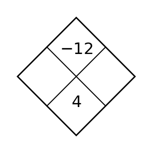
Section 5.1 — Day 3
Decide whether $4x(3x-2)+6(3x-2)$ is more useful in its current form or after factoring by grouping if the goal is to identify a common binomial factor. Rewrite it as one product.
The equation $y=2(1.5)^x$ and a context about repeated percent growth are paired. Build a four-value table and explain why the equation and context support the same family.
Spiral: Solve the system and label the solution type.
$$\begin{aligned}3x+4y=2\\6x+8y=5\end{aligned}$$Formative Spiral: Use the diamond. The top number is the product of the two side numbers, and the bottom number is their sum. Fill in the missing cell(s).
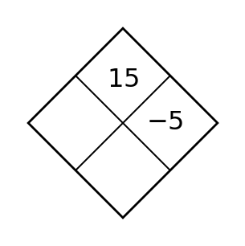
Section 5.2 — Day 1
List two integers with the given product and sum.
- product $12$, sum $7$
- product $-18$, sum $3$
- product $24$, sum $-10$
State whether $(x+3)(x+5)$ represents a sum or product before it is expanded.
Spiral: Solve the system and label the solution type.
$$\begin{aligned}3x+4y=2\\6x+8y=5\end{aligned}$$Formative Spiral: Use the diamond. The top number is the product of the two side numbers, and the bottom number is their sum. Fill in the missing cell(s).
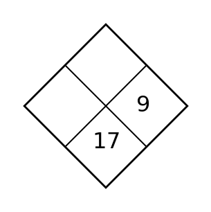
Section 5.2 — Day 2
Use the area model to write the product and the expanded trinomial.

The parent vertex $(0,0)$ moves to $(5,-1)$. Write the translation in words.
Spiral: Why is substitution efficient when one equation is $x=8-y$?
Formative Spiral: Use the diamond. The top number is the product of the two side numbers, and the bottom number is their sum. Fill in the missing cell(s).
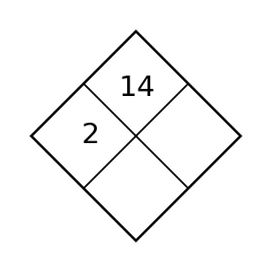
Section 5.2 — Day 3
Use the area model structure to explain why $x^2+7x+12$ factors as $(x+3)(x+4)$, not $(x+2)(x+6)$.
An expression is written $f(x)=(x-4)^2+7$. Use the form to identify the family, build three symmetric points around the key point, and explain how those points confirm the graph feature made easiest by the form.
Spiral: Solve the system and write a final sentence that begins, “The two lines intersect at...”
$$\begin{aligned}r=10-2s\\r+s=4\end{aligned}$$Formative Spiral: Use the diamond. The top number is the product of the two side numbers, and the bottom number is their sum. Fill in the missing cell(s).

Section 5.3 — Day 1
Classify each expression as a difference of squares, a perfect-square trinomial, or neither.
- $x^2-64$
- $y^2-6y+9$
- $4x^2+4x+1$
- $5x^2-45$
In $-2x^3+4x^2-x+9$, identify the degree and leading coefficient.
Spiral: One taxi company charges \$5 plus \$2 per mile. Another charges \$11 plus \$1.25 per mile. Write an equation to find when the costs are equal, then solve.
Formative Spiral: Use the diamond. The top number is the product of the two side numbers, and the bottom number is their sum. Fill in the missing cell(s).
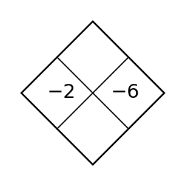
Section 5.3 — Day 2
Factor completely by first removing a common factor: $8x^2-72$.
A graph is translated right $5$ and up $4$. Describe how the key point $(0,0)$ moves.
Spiral: Why should variables be defined before writing a system from a situation?
Formative Spiral: Use the diamond. The top number is the product of the two side numbers, and the bottom number is their sum. Fill in the missing cell(s).
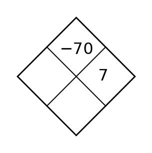
Section 5.3 — Day 3
Find the value of $k$ that makes $x^2+kx+36$ a perfect-square trinomial with a negative binomial factor. Then factor it.
Use the table to decide whether $g$ is a vertical translation of $f$. If so, name the shift.
| $x$ | -1 | 0 | 1 | 2 |
|---|---|---|---|---|
| $f(x)$ | 1 | 0 | 1 | 4 |
| $g(x)$ | 4 | 3 | 4 | 7 |
Spiral: Two cyclists start 18 miles apart and ride toward each other. One rides 12 miles per hour and the other 15 miles per hour. Write an equation or system to find when they meet, then solve.
Formative Spiral: Use the diamond. The top number is the product of the two side numbers, and the bottom number is their sum. Fill in the missing cell(s).
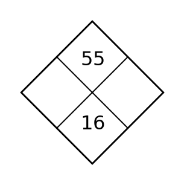
Section 5.4 — Day 1
For each factored function, list the zeros.
- $y=(x-3)(x+5)$
- $y=2(x+1)(x-4)$
- $y=-(x-6)(x+2)$
For $y=(x+1)(x-5)$, identify the $x$-intercepts.
Spiral: For $y\gt -1$, explain why the boundary is horizontal, then graph and describe the solution region in words.

Formative Spiral: Use the diamond. The top number is the product of the two side numbers, and the bottom number is their sum. Fill in the missing cell(s).
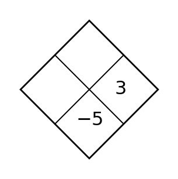
Section 5.4 — Day 2
Match each factor to its x-intercept.
| Factor | $x-5$ | $x+2$ | $x+9$ |
|---|---|---|---|
| x-intercept | _____ | _____ | _____ |
If $(-3,5)$ is on $f$, what point is on $g(x)=-f(x)$?
Spiral: When a system has solution $(6,42)$ in a time-and-cost context, which coordinate usually represents time if the variables are $(t,c)$?
Formative Spiral: Use the diamond. The top number is the product of the two side numbers, and the bottom number is their sum. Fill in the missing cell(s).
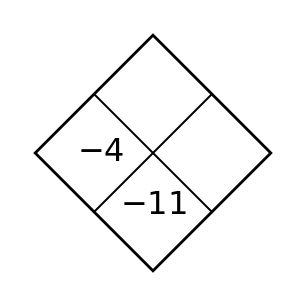
Section 5.4 — Day 3
Write a factored equation for the graph shown, then expand it to standard form.

A function model must have the same shape as $y=|x|$ but its minimum value must be $2$ when $x=-7$. Write the translated equation and state the vertex.
Spiral: For $y\le \frac{1}{2}x+1$, explain why $(4,3)$ is on the boundary and whether it is included in the solution set.
Formative Spiral: Use the diamond. The top number is the product of the two side numbers, and the bottom number is their sum. Fill in the missing cell(s).
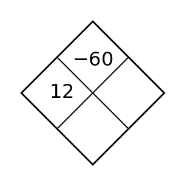
Section 5.5 — Day 1
For each form, state the feature that is easiest to read.
- $y=(x+2)(x-7)$
- $y=3(x-4)^2+1$
- $y=2x^2-5x+9$
For $y=(x-3)^2+2$, identify the vertex.
Spiral: Substitute $(1,6)$ into both inequalities and identify which constraint, if any, keeps it from being feasible.
$$\begin{aligned}y\le 2x+3\\y\gt -x+4\end{aligned}$$Formative Spiral: Use the diamond. The top number is the product of the two side numbers, and the bottom number is their sum. Fill in the missing cell(s).
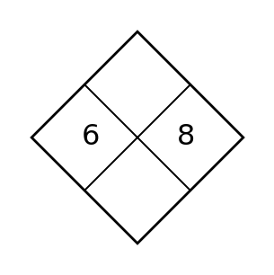
Section 5.5 — Day 2
Choose the form that best answers the question: What are the x-intercepts?
- $y=x^2-7x+12$
- $y=(x-3)(x-4)$
- $y=(x-3.5)^2-0.25$
State whether $(x+3)(x+5)$ represents a sum or product before it is expanded.
Spiral: When a test point makes the inequality false, which side of the boundary should be shaded?
Formative Spiral: Use the diamond. The top number is the product of the two side numbers, and the bottom number is their sum. Fill in the missing cell(s).
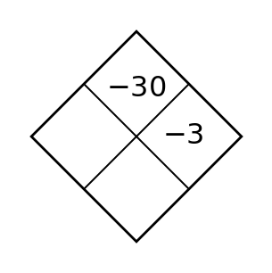
Section 5.5 — Day 3
For the profit model shown, identify the maximum profit from the graph and explain why vertex form is useful for this question.
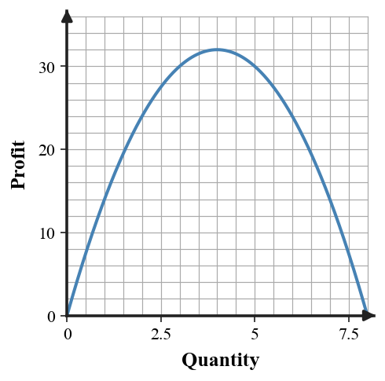
Use the table to identify the vertical scale factor from $f$ to $g$.
| $x$ | -2 | -1 | 0 | 1 | 2 |
|---|---|---|---|---|---|
| $f(x)$ | 4 | 1 | 0 | 1 | 4 |
| $g(x)$ | 8 | 2 | 0 | 2 | 8 |
Spiral: Graph the system with one dashed and one solid boundary. Then list one point that is in the overlap.
Formative Spiral: Use the diamond. The top number is the product of the two side numbers, and the bottom number is their sum. Fill in the missing cell(s).